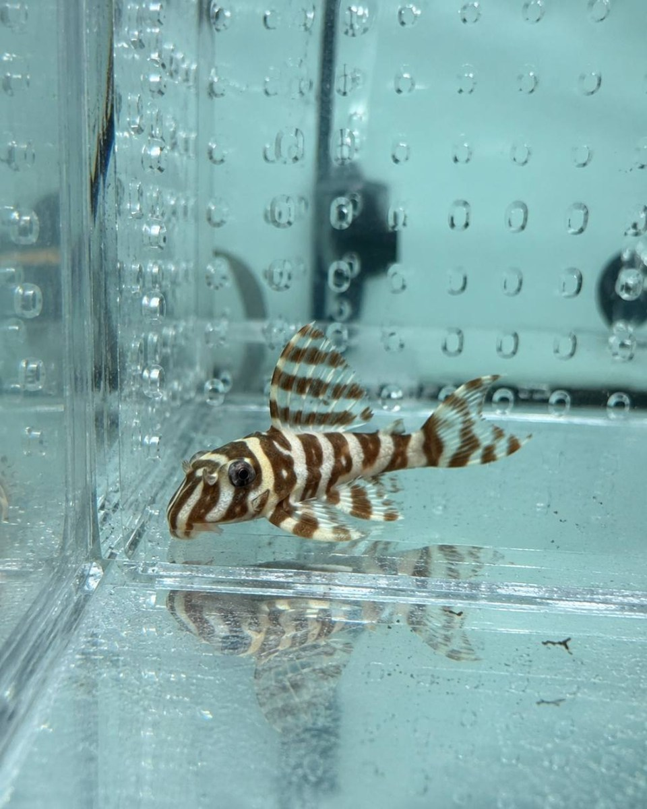

淺色條紋異形
正在載入個體資訊…
- 個性觀察
- 依個體而異
- 辨識狀態
- 需先確認品系
- 水質重點
- 維持穩定
- 環境重點
- 提供躲藏空間
- 餵食重點
- 依個體調整
本頁不提供未確認的學名、L 編號、價格、成體尺寸或精確水質數字。正式交流前，請以個體來源與實際飼養資料再次確認。

正在載入個體資訊…
固定時間記錄呼吸、體表、腹部、活動與進食，避免只憑單次狀態下判斷。
任何水質、溫度、流量或餵食改變都應留有觀察時間，避免多項同時大幅調整。
保留來源、入缸日期與多角度照片，能讓品系辨識與後續交流更有依據。
若出現持續急促呼吸、明顯外傷、長時間拒食或其他異常，應先隔離觀察並尋求具水生動物經驗的專業協助。